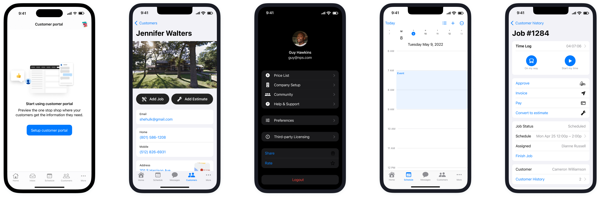
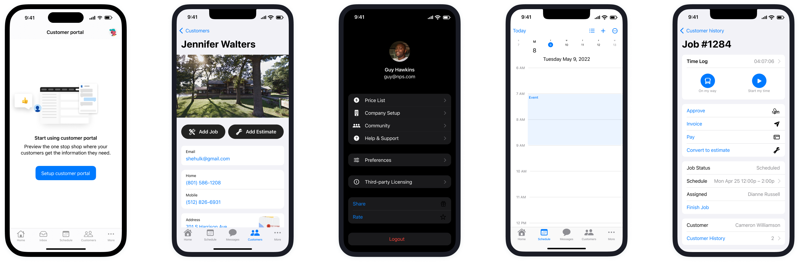

About Housecall Pro
Housecall Pro (HCP) is a SaaS operating platform combined with modern financial services and supporting business solutions that helps home service professionals run all aspects of their business.
Role & Responsibilities
- Lead Designer
- Research
- Prototype
- Design
- Worked closely with a cross-functional team of Engineers, Designers, Marketing, PMs and executive stakeholders
- Worked across teams and product areas to create a holistic user-experience
Design Skillset & Craft
iOS and Android Design Systems
I established the iOS and Android design systems.
 


Case Study
Onboarding Experience Design
The Problem
Pros faced challenges in understanding where to start and how to navigate the broad range of features within Housecall Pro, leading to underutilization and diminished value from the product.
Desired Outcome
Create a streamlined, intuitive onboarding experience that empowers users to quickly identify and engage with the most valuable aspects of Housecall Pro. The ultimate goal was to drive higher product engagement and improve customer retention
Solution
We developed a comprehensive onboarding strategy that spanned product teams, establishing guiding principles, cohesive design patterns, and a library of reusable components. This approach ensured a consistent, engaging onboarding experience that adapted to each user’s journey through the platform and provided contextual support at every stage.


Key Components
- Core Principles: Onboarding extended across the user’s journey, offering contextual guidance to ease adoption and build confidence at every step.
- Reusable Components: Created a toolkit of flexible onboarding components that could be seamlessly integrated into different areas of the product.
- Scalable Patterns: Defined interaction and engagement patterns that teams could adapt to maintain brand consistency and drive discovery.


Outcome
This user-centered, journey-based onboarding approach resulted in a measurable increase in engagement and significantly improved customer retention.